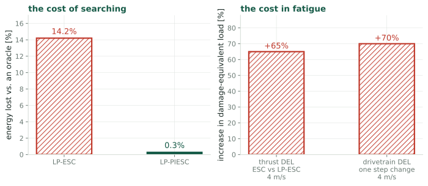
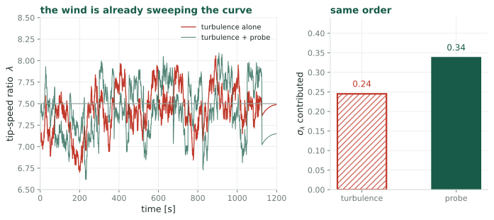
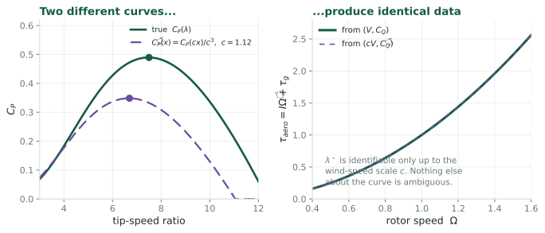

Aerodynamic torque is reconstructible for free, and the wind is already sweeping the curve
Robot Control Lab · Systems Engineering · UT Dallas

Searching is not free. It costs energy while you search, and it costs fatigue whether or not you find anything. Every design choice in this line is a trade against those two numbers.
The rotor equation is \(I\dot\Omega = T_{\text{aero}} - \tau_{\text{gen}}\), and every term on the right is known. \(\tau_{\text{gen}}\) is commanded, \(\Omega\) is measured by an encoder, \(I\) is a design constant. So
\[T_{\text{aero}}(t) \;=\; I\dot\Omega(t) + \tau_{\text{gen}}(t)\]
is exactly reconstructible with no anemometer, and it satisfies
\[T_{\text{aero}} \;=\; \tfrac12\rho\pi R^3 V^2\, C_Q\!\left(\frac{R\Omega}{V}\right)\]
Two unknowns: the wind path \(V(t)\) and the function \(C_Q(\cdot)\). The question is whether the record of \((\Omega,\,T_{\text{aero}})\) determines them.

Turbulence sweeps \(\lambda\) with \(\sigma_\lambda \approx 0.24\), against the probe’s \(0.34\). Same order. The dither is not supplying excitation the wind lacks. It is supplying excitation the controller knows about.
Substitute \(\tilde V = cV\) and ask which curve explains the same data:
\[\tilde C_Q(x) = \frac{C_Q(cx)}{c^2} \;\;\Longrightarrow\;\; \tilde C_P(x) = \frac{C_P(cx)}{c^3} \;\;\Longrightarrow\;\; \tilde\lambda^\star = \frac{\lambda^\star}{c}\]

One unidentifiable direction, an overall scaling of the wind, mapping straight onto a scaling of \(\lambda^\star\). Everything else about the curve is determined.
Air density enters as a prefactor, so an error in \(\rho\) scales \(C_P\) uniformly:
\[\tilde C_P(x) = \frac{C_P(x)}{d} \;\;\Longrightarrow\;\; \tilde\lambda^\star = \lambda^\star\]
Wind speed scale
Moves the estimated peak. Must be pinned.
Air density
Does not move the peak. Can be left unknown.
Useful, because density is the quantity that varies with temperature and altitude and is usually estimated badly. It turns out not to matter for locating \(\lambda^\star\).
What you do not need
A fast rotor-effective wind estimate. Those are reconstructed through a presumed \(C_P\) surface, which makes the whole exercise circular.
What you do need
One slowly updated absolute wind scale, to pin the constant \(c\). A met mast, a nacelle lidar, or a long-run SCADA average.
A slow reference is also far harder to contaminate with the control parameter. The induction response that makes nacelle estimates circular is fast, and it does not reach a monthly average.
Take an existing simulation run with the dither switched off. Reconstruct \(T_{\text{aero}} = I\dot\Omega + \tau_{\text{gen}}\), fit a parametrized \(C_Q(\cdot)\) jointly with the wind path, pin the scale with the known mean wind, and compare the recovered peak against the simulator’s own answer.
What makes it cheap
No new runs. Every quantity needed is already logged in the existing output, and the dither-off case is the baseline condition.
What decides it
Whether the recovered \(\lambda^\star\) lands within the tolerance the erosion problem needs, which is about \(0.1\).
Prior art
This sits close to the wind-speed-estimator literature, which assumes \(C_P\) known and solves for \(V\). The joint version is what would be new, and that claim needs checking first.
Differentiation
\(T_{\text{aero}}\) needs \(\dot\Omega\), and differentiating a noisy encoder signal is where this could fail in practice rather than in principle.
Identifiability in practice
One blind direction in theory does not guarantee a well-conditioned fit. The degeneracy could be nearly degenerate in more directions than one.
Of the three questions this is the riskiest and the one with the largest payoff. It does not improve the probing trade-off. It removes it.
The dither exists because the excitation is unknown, not because excitation is lacking.
The claim
Aerodynamic torque is reconstructible with no wind sensor, turbulence supplies comparable excitation to the probe, and the joint estimation problem has exactly one blind direction, which a slow absolute reference pins.
If it holds
No dither. No fatigue cost of probing, no amplitude to choose, no frequency plan, and the bias-variance trade of the estimand question disappears with it.
Kumar & Rotea, Energies 2022 · Ciri, Leonardi & Rotea, Wind Energy 2019 · Mulders, Gallo & Rotea, ACC 2024 · Soltani et al. on rotor-effective wind estimation
One of three: see also the estimand and the speed limit.
← Wind Turbine Control · Q3, Probing